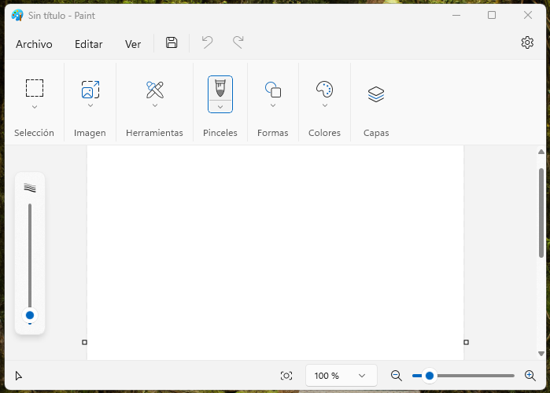
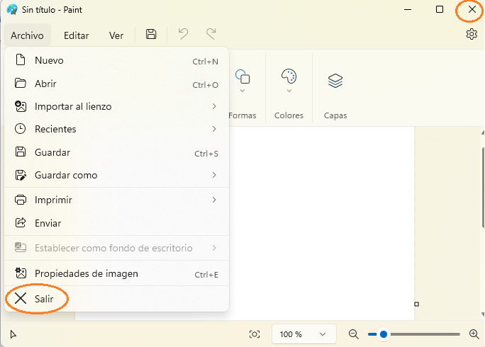
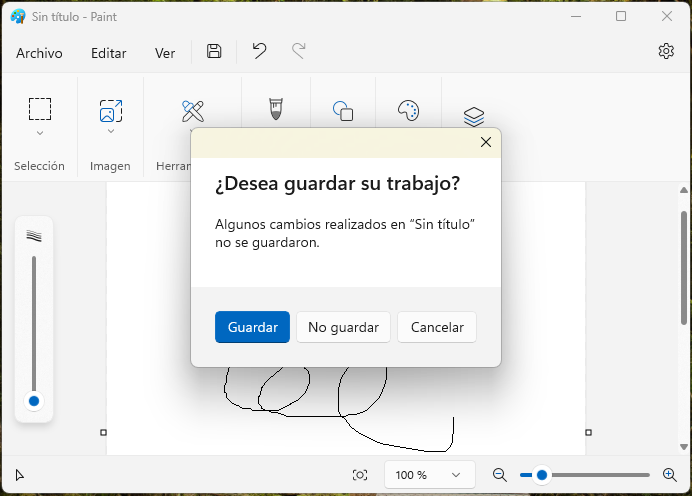
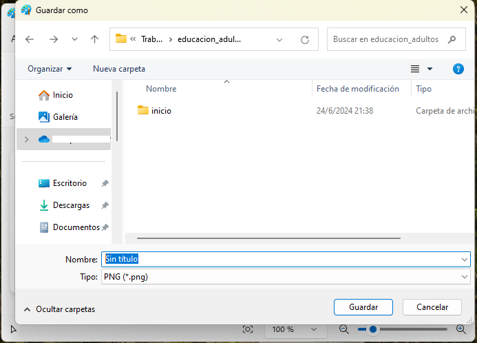
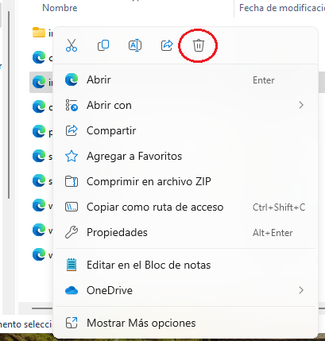
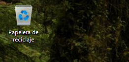

En capítulos anteriores vimos cómo crear carpetas y archivos mediante la consola de comandos, pero es igual con la interfaz gráfica. Para crear una carpeta, clicamos con el botón derecho en cualquier área de la pantalla, seleccionas la opción "nuevo" de la lista y luego la opción "carpeta" de la lista subsiguiente.
La creación de algunos archivos puede hacerse de la misma forma, pero la más común es dejar que el programa en uso haga esto por nosotros. Abramos por ejemplo la aplicación de dibujo llamada Paint, en el lienzo en blanco podemos dibujar cuaquier cosa, luego cerramos con el botón de equis o seleccionando la opción "salir" del menú Archivo, ubicado en la parte superior izquierda.
El programa nos mostrará un cuadro informativo en el que se nos insta a guardar el archivo, tocamos el botón "aceptar" y se abrirá un nuevo cuadro, esta vez con varios campos para rellenar, uno será el nombre del archivo, colocamos el nombre y dejamos los demás campos como están, sólo tocamos el botón guardar y listo.
De forma automática se ha creado un archivo con extensión .jpg en la carpeta imágenes. De la misma forma funcionan todos los demás programas del ambiente windows.
Copiar, cortar o mover archivos de una carpeta a otra es tan sencillo como "coger" el archivo con el ratón y arrastrarlo hasta la ubicación deseada. Copiar un archivo crea un duplicado del archivo en una memoria virtual llamada "porta papeles" que será vaciada luego en el lugar de destino cuando el archivo es "pegado". Por otro lado, cortar, también crea el duplicado, pero eliminará el archivo en el lugar de origen cuando es "pegado" en el lugar de destino.
Hay varios atajos que podemos usar con el teclado para usar de forma más eficiente la interfaz.
control + Y: rehace la última acción deshecha.
control + P: abre la interfaz para imprimir.
control + A: selecciona todo el contenido.
control + S: guarda el trabajo hecho.
control + Z: deshace la última acción hecha.
control + X: corta selección.
control + C: copia la selección.
control + V: pega lo copiado o cortado.
Papelera de reciclaje
Crear archivos y carpetas ocupa espacio en la memoria del ordenador, por eso es importante poder eliminar aquellos archivos y carpetas que ya no necesitamos. Generalmente, al hacer click con el botón derecho del ratón sobre la carpeta o archivo, se despliega un menú que tiene una opción de eliminar.
Una vez tocada la opción, el archivo o carpeta desaparece, yendo a parar a una carpeta especial llamada papelera de reciclaje, se llama así porque, si en algún momento, queremos recuperar algún archivo eliminado, podemos hacerlo.
Por otro lado, esta carpeta, representada con un icono bastante intuitivo, tiene una opción que elimina de forma permanente los archivos.
Practiquemos un poco:
Veamos cómo estás con la computadora.
Este ejercicio es muy sencillo, pero muchos reprueban.
Intenta hacerlo a la primera porque te saca si fallas.